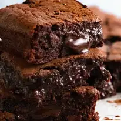

Chocolate Brownies

Chocolate brownie
These are my "go to" brownies, the one I have been making for years that's super easy and outrageously chocolatey. The best fudgey chocolatey brownies made without fuss, in one bowl in 10 minutes. These are not the cakey kind, they're soft fudgey kind. Super rich and moist!
- 200g / 14 tbsp unsalted butter (1 3/4 US sticks)
- 200 g / 1 1/4 cups dark chocolate chips (7 oz) (Note 1)
- 1 cup (175g) brown sugar , loosely packed
- 3 eggs , lightly beaten
- 1 tsp vanilla extract
- 1/2 cup (75g) plain flour
- 1/4 cup (30g) cocoa powder
- Pinch of salt
- 180g/6oz dark chocolate block/bar (optional) , chopped into chunks rather than shards, (bittersweet or semi-sweet, cooking chocolate) (Note 2)
- Preheat oven to 180°C/350°F (160°C fan forced)
- Spray a 20cm/8" square tin with oil and line with baking/parchment paper with overhang (Note 2).
- Place butter and chocolate chips in a heatproof bowl, microwave in 30 second bursts (takes me 1m 30 sec) until melted. Stir until smooth.
- Add sugar and vanilla, mix, then add eggs and mix well until smooth and molten.
- Add flour, cocoa and salt and stir until smooth. Stir in chopped chocolate, pour into pan
- Bake 24 minutes for really gooey in the centre, 28 minutes for fudgey but still very moist (my favourie, shown in video & photos), 32 minutes for moist fudge-cake-like. (See in post for toothpick testphotos).
- If you didn't use the extra chocolate for stirring in, reduce cook time by 2 minutes.
- Rest for 10 minutes before lifting out of the pan. Allow to cool for at least 20 minutes before cutting. Store in an airtight container for 4 days (bet they don't last that long!) or freeze for 3 months.